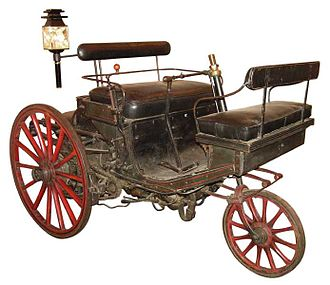
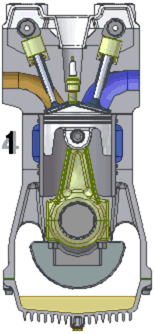
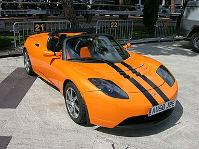

Otomobilin tarihi, 19. yüzyılda enerji kaynağı olarak buharın kullanılmasıyla başlar ve içten yanmalı motorlarda petrolün kullanılmasıyla devam eder. Günümüzde alternatif enerji kaynakları ile çalışan otomobillerin üretilmesi konusunda çalışmalar hız kazanmıştır.
Otomobil, ortaya çıkışından itibaren gelişmiş ülkelerde insan ve yük taşımacılığı konusunda ana ulaşım aracı olarak kendini kabul ettirmiş ve otomotiv endüstrisi II. Dünya Savaşı'ndan sonra en etkili endüstri kollarından birisi olmuş
Aşağıda otomobil tarihiyle ilgili bilgiler verilmiştir
İlk Otomobil
içten Yanmalı Motor
Finansal Kriz
Elektrikli Otomobiller

Tarihin ilk otomobilinin hangisi olduğunu söyleyebilmek oldukça zor olsa da genel olarak Karl Benz tarafından üretilen Benz Patent Motorwagen ilk otomobil olarak kabul edilir. Ancak Cugnot'nun "Fardier"sini de ilk otomobil olar
ak kabul edenler vardır. 1891'de Panhard ve Levassor Paris sokaklarında Benz motoruyla donatılmış ilk Fransız otomobilleriyle dolaşmaktaydı. 1877'de 4 zamanlı ve 1 beygir gücüne sahip motoru olan bir otomobil geliştiren Alman mucit Siegfried Marcus ise ilk otomobil ile ilgili tartışmaların dışında kalmıştır

İçten yanmalı motorların öncülü sayılan, içinde bir piston bulunan metalik silindirden oluşan bir düzenek 1673'te Paris'te fizikçi Christiaan Huygens ve asistanı Denis Papin tarafından geliştirilmiştir. Alman Otto von Guericke'in geliştirdiği prensipten yola çıkan Huygens, vakum yaratmak için hava pompasından değil, barutun ısıtılmasıyla elde edilen bir yanma sürecinden yararlanmıştır. Hava basıncı pistonun ilk konumuna dönmesini sağlar ve böylece bir kuvvet oluşturur.
İsviçreli François Isaac de Rivaz 1775'lere doğru otomobilin gelişimine katkıda bulundu. Yaptığı buharlı birçok otomobil esneklikten yoksun olmaları nedeniyle başarılı olamasa da "Volta tabancası"nın çalışmasından esinlenerek yaptığı içten yanmalı motora benzeyen bir düzeneğe 30 Ocak 1807'de patent aldı.
2007'de patlak veren dünya finansal krizi otomobil endüstrisine oldukça ağır bir darbe indirmiştir. Temmuz ayından itibaren emlâk piyasası kredi krizinden etkilenen finans dünyası altüst olmuş ve otomobil üreticilerinin büyük çoğunluğunu bundan etkilenmiştir. Üreticiler bu krizin tüketiciler üzerinde yaratacağı tedirginlikten korkmaktaydılar. Ayrıca otomobil satışlarının üçte ikisi banka kredisi ile yapılmaktaydı ve bankalar giderek kredi vermekte zorlanmaya başlamış ve faiz oranları yükselişe geçmişti.

Elektrikli motor ile tahrik yüzyılı aşkın bir süredir bilinmektedir. Günümüzde bataryalarda gerçekleşen teknolojik gelişme sayesinde, Li-ion bataryalar normal otomobillerin performansına erişebilen otomobiller yapılmasını olanaklı kılmaktadır. Tesla Roadster, bu tip otomobillerin performansına bir örnektir.
Elektrikli otomobilin yerleşebilmesi için, hızlı batarya şarj istasyonları gibi yeni altyapıların da geliştirilmesi gerekmektedir. Ayrıca bataryaların geri dönüşümünü sağlamak da bir sorun olarak durmaktadır.